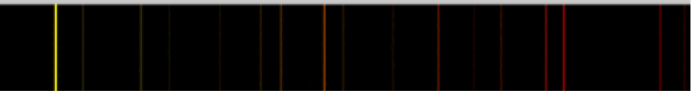
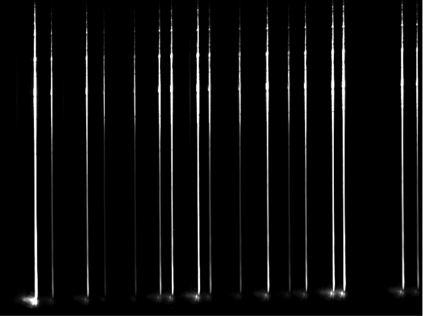
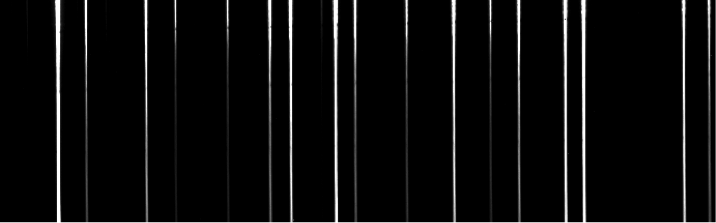
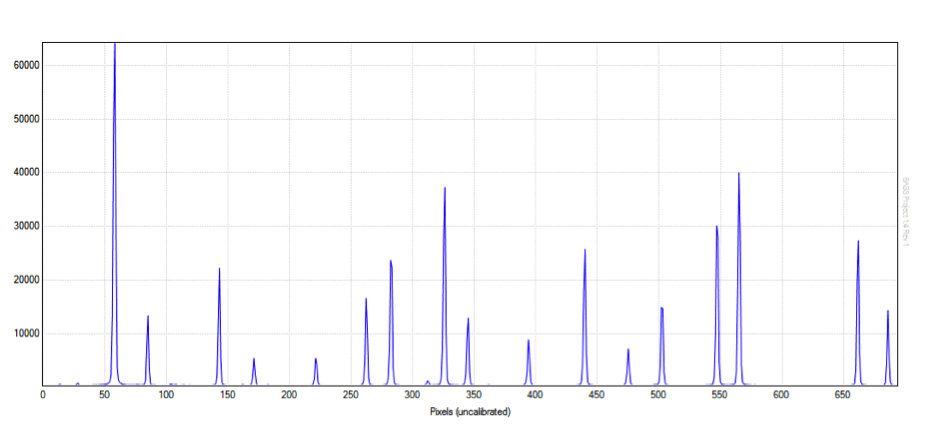
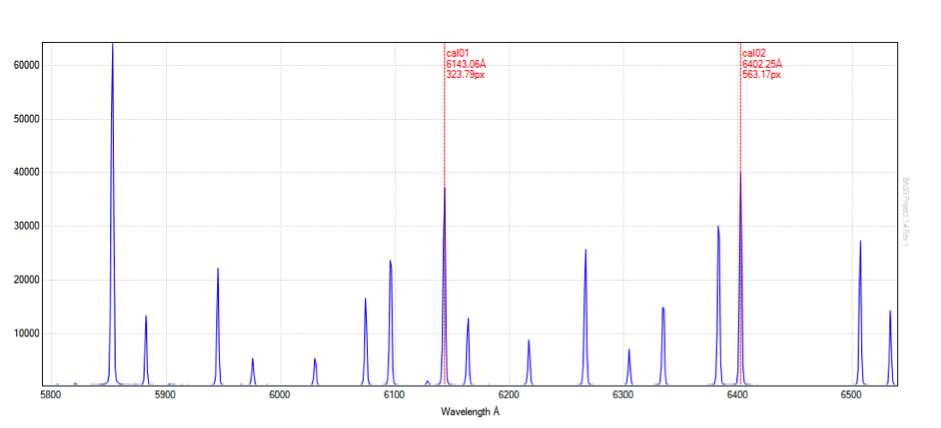
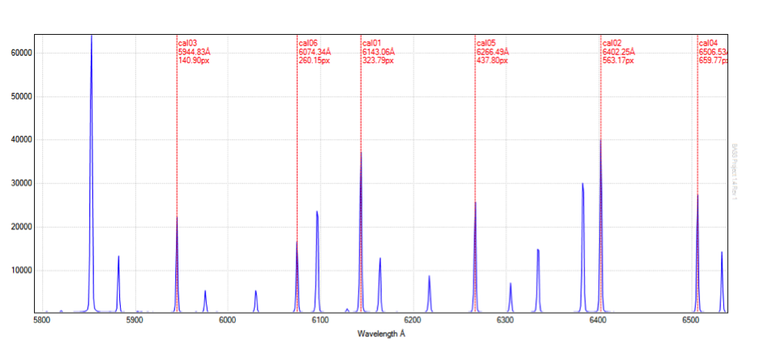
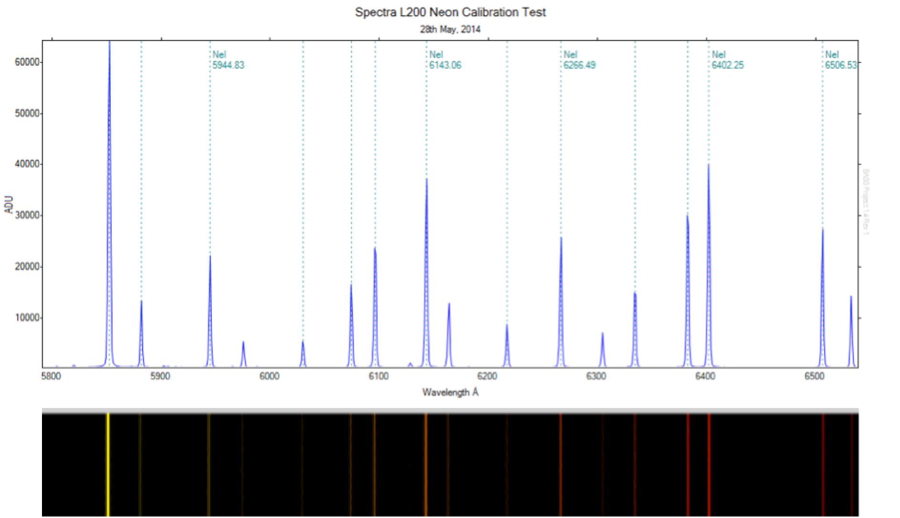

Initial calibration and testing of a Spectra L200 spectroscope using the integrated neon calibration lamp. The analysis was undertaken using "BASS". Click "Continue reading" below to see the entire analysis.


Equipment
Telescope: DSI RC14C (0.35m, f/7 Ritchey–Chrétien)
Imaging Camera: Atik314L+ (1392x1040, 0.65µm)
Spectroscope: Spectra-L200 with 600 l/mm diffraction grating
Images
Images of the Spectra L200 integrated neon lap were taken at a variety of exposures from 1 to 5 seconds. Figure 1 shows the neon calibration lamp centred at approximately 6150 Angstroms. The exposure is 5 seconds at Bin2, with the slit adjusted to approximately 25 microns on the slit adjustment dial.

Camera angle has been [incorrectly] adjusted to present 'vertical' lines. The residual tilt is evident.
Analysis
1. Raw profile
An active binning area covering the central portion of the image was selected:

Figure 2 shows the resulting uncalibrated spectral profile as it appears in BASS (click to enlarge image).

2. Calibrated profile
Figure 3 shows the result of a simple two point (linear) calibration and provides the following values:
- Dispersion = 1.08 Å/pixel.
- Average FWHM = 2.18
- R = 2818 @ 6143.06Å

Direct measurement of a number of other lines shows results that are within 0.2 Å of published values.
Figure 4 shows the result of calibration using 6 points and a quadratic fit. The resulting RMS is 0.0878.

Measurement of additional lines shows improved results over that of the two point calibration, yielding values that are within 0.025 Å of published values.
BASS Measurement Tool
The BASS measurement tool allows easy selecting and measuring of features in a profile. The typical output appears as follows:
Profile : CCD Image 41.fit
Selected Start : 6258.2Å (430.07 px)
Selected End : 6273.9Å (444.56 px)
Selected Width : 15.7Å (14.49 px)
Max Flux : 26582.7 at 6266.6Å (437.82 px)
Min Flux : 400.79 at 6258.21Å (430.07 px)
Flux Range : 26181.91
Average Flux : 3797.6 (RMS 8084.89)
Std Deviation : 7137.49
SNR : 0.53
Continuum Slope : 25.1 ADU/Å 0.27 ADU/px
FWHM : 2.11 Å (R = 2971 @6266.6Å)
Formatted Profile
Figure 5 shows a formatted profile produced in BASS. A synthesised colour image strip featuring the neon emission lines appears below the profile.
